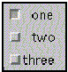

All Packages Class Hierarchy This Package Previous Next Index
Class java.awt.Checkbox
java.lang.Object
|
+----java.awt.Component
|
+----java.awt.Checkbox
- public class Checkbox
- extends Component
- implements ItemSelectable
A check box is a graphical component that can be in either an
"on" (true) or "off" (false) state.
Clicking on a check box changes its state from
"on" to "off," or from "off" to "on."
The following code example creates a set of check boxes in
a grid layout:
setLayout(new GridLayout(3, 1));
add(new Checkbox("one", null, true));
add(new Checkbox("two"));
add(new Checkbox("three"));
This image depicts the check boxes and grid layout
created by this code example:

The button labeled one is in the "on" state, and the
other two are in the "off" state. In this example, which uses the
GridLayout class, the states of the three check
boxes are set independently.
Alternatively, several check boxes can be grouped together under
the control of a single object, using the
CheckboxGroup class.
In a check box group, at most one button can be in the "on"
state at any given time. Clicking on a check box to turn it on
forces any other check box in the same group that is on
into the "off" state.
- See Also:
- GridLayout, CheckboxGroup

-
 Checkbox()
Checkbox()
- Creates a check box with no label.
-
Checkbox(String)
- Creates a check box with the specified label.
-
Checkbox(String, boolean)
- Creates a check box with the specified label.
-
Checkbox(String, boolean, CheckboxGroup)
- Creates a check box with the specified label, in the specified
check box group, and set to the specified state.
-
Checkbox(String, CheckboxGroup, boolean)
- Constructs a Checkbox with the specified label, set to the
specified state, and in the specified check box group.

-
 addItemListener(ItemListener)
addItemListener(ItemListener)
- Adds the specified item listener to receive item events from
this check box.
-
addNotify()
- Creates the peer of the Checkbox.
-
getCheckboxGroup()
- Determines this check box's group.
-
getLabel()
- Gets the label of this check box.
-
getSelectedObjects()
- Returns the an array (length 1) containing the checkbox
label or null if the checkbox is not selected.
-
getState()
-
Determines whether this check box is in the "on" or "off" state.
-
paramString()
- Returns the parameter string representing the state of
this check box.
-
processEvent(AWTEvent)
- Processes events on this check box.
-
processItemEvent(ItemEvent)
-
Processes item events occurring on this check box by
dispatching them to any registered
ItemListener objects.
-
removeItemListener(ItemListener)
- Removes the specified item listener so that the item listener
no longer receives item events from this check box.
-
setCheckboxGroup(CheckboxGroup)
- Sets this check box's group to be the specified check box group.
-
setLabel(String)
- Sets this check box's label to be the string argument.
-
setState(boolean)
-
Sets the state of this check box to the specified state.

 Checkbox
Checkbox
public Checkbox()
- Creates a check box with no label. The state of this
check box is set to "off," and it is not part of any
check box group.
Checkbox
public Checkbox(String label)
- Creates a check box with the specified label. The state
of this check box is set to "off," and it is not part of
any check box group.
- Parameters:
- label - a string label for this check box,
or
null for no label.
Checkbox
public Checkbox(String label,
boolean state)
- Creates a check box with the specified label. The state
of this check box is as specified by the
state
argument, and it is not part of any check box group.
- Parameters:
- label - a string label for this check box,
or
null for no label.
- state - the initial state of this check box.
Checkbox
public Checkbox(String label,
boolean state,
CheckboxGroup group)
- Creates a check box with the specified label, in the specified
check box group, and set to the specified state.
- Parameters:
- label - a string label for this check box,
or
null for no label.
- state - the initial state of this check box.
- group - a check box group for this check box,
or
null for no group.
Checkbox
public Checkbox(String label,
CheckboxGroup group,
boolean state)
- Constructs a Checkbox with the specified label, set to the
specified state, and in the specified check box group.

 addNotify
addNotify
public void addNotify()
- Creates the peer of the Checkbox. The peer allows you to change the
look of the Checkbox without changing its functionality.
- Overrides:
- addNotify in class Component
- See Also:
- createCheckbox, getToolkit
getLabel
public String getLabel()
- Gets the label of this check box.
- Returns:
- the label of this check box, or
null
if this check box has no label.
- See Also:
- setLabel
setLabel
public synchronized void setLabel(String label)
- Sets this check box's label to be the string argument.
- Parameters:
- label - a string to set as the new label, or
null for no label.
- See Also:
- getLabel
getState
public boolean getState()
- Determines whether this check box is in the "on" or "off" state.
The boolean value
true indicates the "on" state,
and false indicates the "off" state.
- Returns:
- the state of this check box, as a boolean value.
- See Also:
- setState
setState
public void setState(boolean state)
- Sets the state of this check box to the specified state.
The boolean value
true indicates the "on" state,
and false indicates the "off" state.
- Parameters:
- state - the boolean state of the check box.
- See Also:
- getState
getSelectedObjects
public Object[] getSelectedObjects()
- Returns the an array (length 1) containing the checkbox
label or null if the checkbox is not selected.
- See Also:
- ItemSelectable
getCheckboxGroup
public CheckboxGroup getCheckboxGroup()
- Determines this check box's group.
- Returns:
- this check box's group, or
null
if the check box is not part of a check box group.
- See Also:
- setCheckboxGroup
setCheckboxGroup
public void setCheckboxGroup(CheckboxGroup g)
- Sets this check box's group to be the specified check box group.
If this check box is already in a different check box group,
it is first taken out of that group.
- Parameters:
- g - the new check box group, or
null
to remove this check box from any check box group.
- See Also:
- getCheckboxGroup
addItemListener
public synchronized void addItemListener(ItemListener l)
- Adds the specified item listener to receive item events from
this check box.
- Parameters:
- l - the item listener.
- See Also:
- ItemEvent, ItemListener, removeItemListener
removeItemListener
public synchronized void removeItemListener(ItemListener l)
- Removes the specified item listener so that the item listener
no longer receives item events from this check box.
- Parameters:
- l - the item listener.
- See Also:
- ItemEvent, ItemListener, addItemListener
processEvent
protected void processEvent(AWTEvent e)
- Processes events on this check box.
If the event is an instance of
ItemEvent,
this method invokes the processItemEvent method.
Otherwise, it calls its superclass's processEvent method.
- Parameters:
- e - the event.
- Overrides:
- processEvent in class Component
- See Also:
- ItemEvent, processItemEvent
processItemEvent
protected void processItemEvent(ItemEvent e)
- Processes item events occurring on this check box by
dispatching them to any registered
ItemListener objects.
This method is not called unless item events are
enabled for this component. Item events are enabled
when one of the following occurs:
- An
ItemListener object is registered
via addItemListener.
- Item events are enabled via
enableEvents.
- Parameters:
- e - the item event.
- See Also:
- ItemEvent, ItemListener, addItemListener, enableEvents
paramString
protected String paramString()
- Returns the parameter string representing the state of
this check box. This string is useful for debugging.
- Returns:
- the parameter string of this check box.
- Overrides:
- paramString in class Component
All Packages Class Hierarchy This Package Previous Next Index